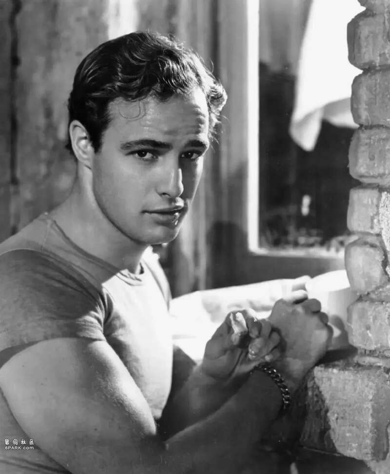
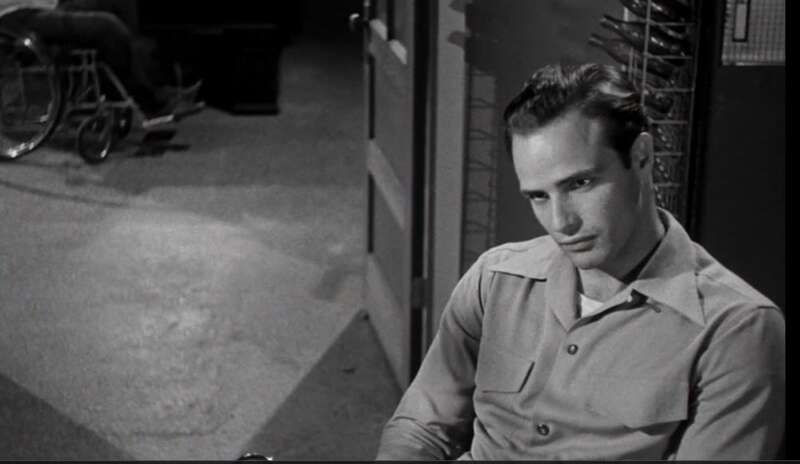
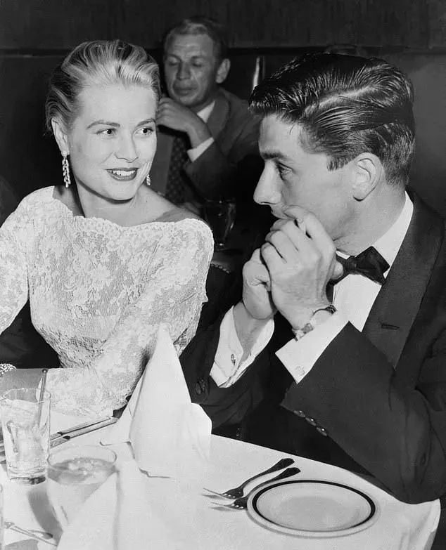
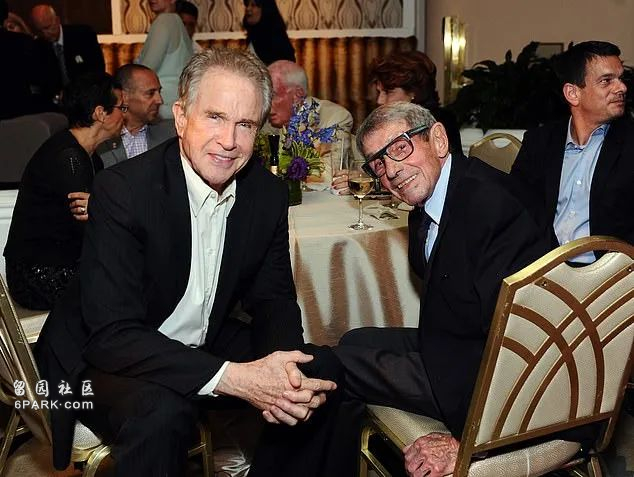
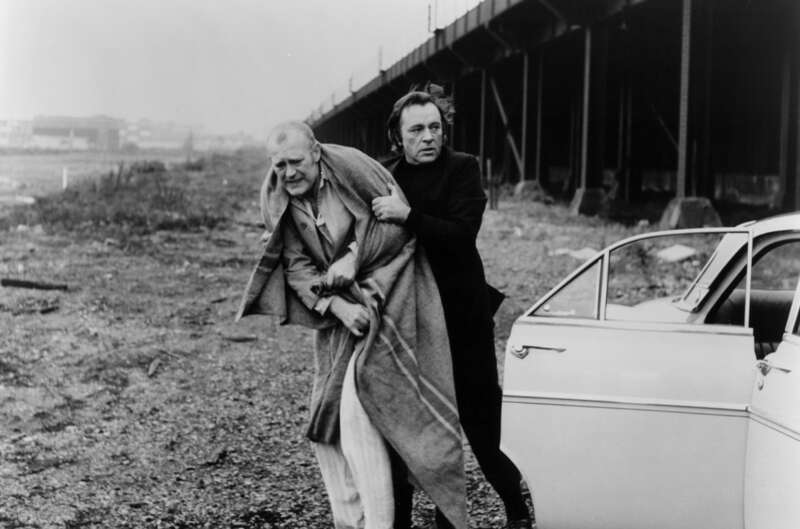
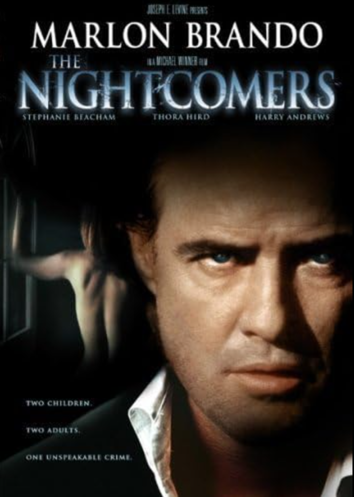
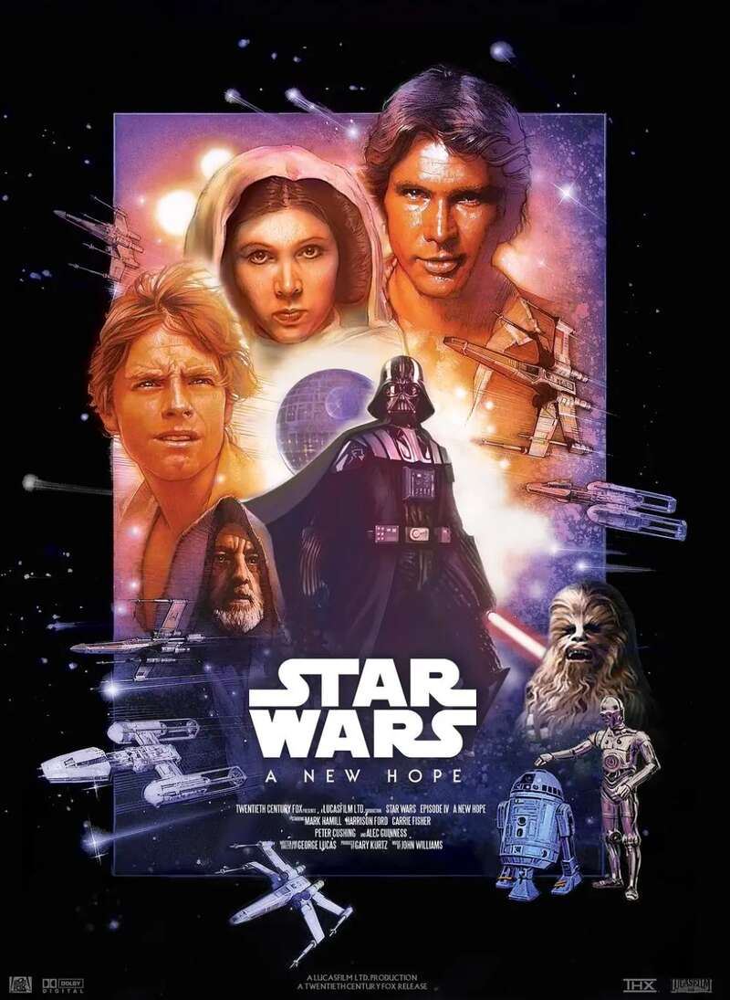
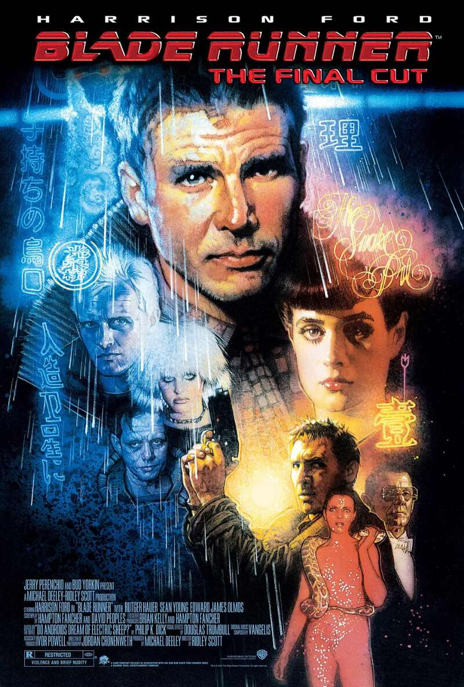
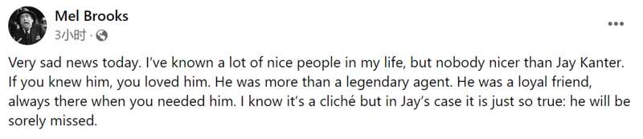

好莱坞巨星背后的男人，去世了……
据多家外媒报道，好莱坞传奇电影制片人、经纪人杰伊·坎特（Jay Kanter）于当地时间8月6日在家人的陪伴下“因自然原因平静地去世”，终年97岁。他的儿子亚当·坎特证实了这一消息。
也许大家对杰伊·坎特这个名字有点陌生，但他曾合作过的明星个个家喻户晓：
杰伊·坎特1926年12月12日出生在美国芝加哥。
在很年轻的时候，他就进入好莱坞著名经纪公司工作。在那里，得到了电影大亨的赏识。
杰伊·坎特
22岁时，坎特迎来了人生的转折点——和大名鼎鼎的“教父”马龙·白兰度初遇：那时的“教父”还是一个刚刚崭露头角的新人演员。
当时还不是白兰度经纪人的坎特被派去火车站接白兰度，很快就被白兰度认可，成为他的经纪人。

之后两个年轻人的合作就此展开，他们也成了一生的挚友。
在坎特的帮助下，白兰度出演了《男儿本色》，从此开启他爆火的职业生涯，还两度获得奥斯卡影帝，成为“教父”。

《男儿本色》剧照
除此之外，坎特还担任过众多大牌明星的经纪人：

坎特和格蕾丝·凯利
坎特和玛丽莲·梦露

坎特和沃伦·比蒂
只是同事还不够，坎特和他们的关系都还很不错：
坎特与第二任妻子、派拉蒙影业前总裁的女儿朱迪·巴拉班（Judy Balaban）结婚的时候，格蕾丝·凯利是他们的伴娘，马龙·白兰度是伴郎。
坎特一生结过3次婚：第一任妻子是女演员罗伯塔·海恩斯 (Roberta Haynes)，两人的婚姻持续了不到一年；第二任妻子是朱迪·巴拉班；第三任妻子是基特·贝内特（Kit Bennett），两人的婚姻一直持续到2014年基特离世。
时间来到20世纪60年代，坎特解锁了一个新身份——电影制片人。
很多经典电影，坎特都参与制作：
理查德·伯顿主演的《恶棍》，

马龙·白兰度主演的《夜行人》，

巴里·纽曼主演的《急先锋飞车闯七关》（Fear Is the Key），彼得·乌斯蒂诺夫主演的《大卡车和克莱尔姐妹》等。
1975年，回到洛杉矶的坎特开始与20世纪福克斯、米高梅等知名好莱坞电影公司合作。
随后，坎特以制片人身份参与制作了许多鼎鼎大名的电影：《星球大战》、《异形》、《银翼杀手》、《末路狂花》……

《星球大战》

《银翼杀手》
《异形》
有着这样的人生履历，也难怪外媒用“传奇”来形容他……
坎特去世后，曾与他合作《新科学怪人》、《无声电影》、《紧张大师》等电影的导演、他的好友梅尔·布鲁克斯 (Mel Brooks) 发文悼念：

今天得到了非常悲伤的消息。我一生中认识了很多好人，但没有人比杰伊·坎特更好。如果你认识他，你会爱他。他不仅仅是一个传奇的制片人。他也是一个忠诚的朋友，当你需要他的时候，他总是在那里。我知道这样的说法是陈词滥调，但对于杰伊是如此真实：他会被深切怀念。
也有网友一边悼念一边惊讶于他的非凡人生：
哇，他过着不同寻常的生活，愿他安息，也为他家人祈祷。
没错，这样的一辈子，没有遗憾了。